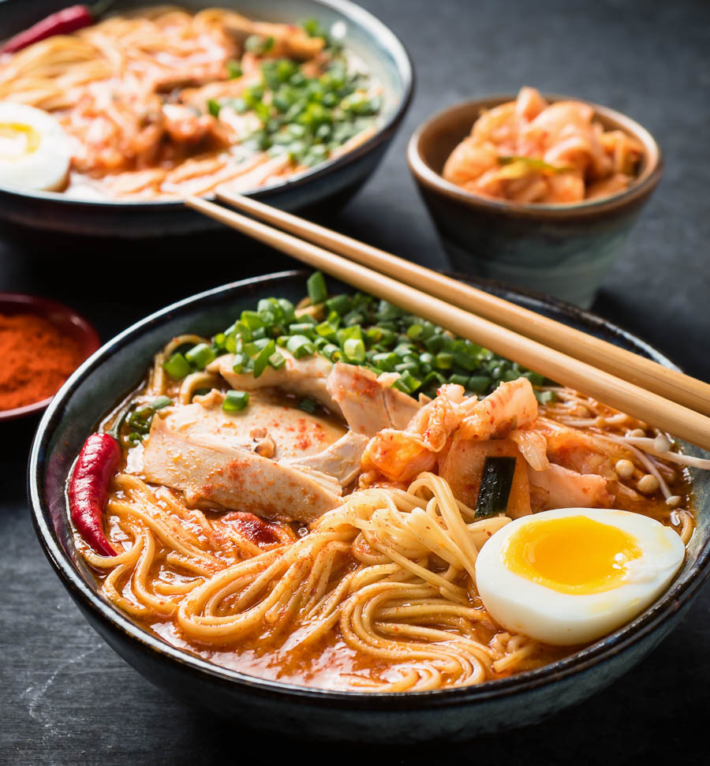

Here's how to make Korean Noodles

Here's a quick guide on how to make the most delicious Korean Noodles that is going to set your tongue aflame
Ingredients Required:
- Instant Korean Noodles(Any Company)
- Eggs(Optional)
- Chilli
- Salt
Steps for Cooking:
- Fill a boiling pan with 1.5-2 cups of water
- When the water starts boiling, break the instant noodles in several parts and add them into the water
- Mix in the spices and toppings provided with the instant noodles
- Chop up a chilli and add salt depending on your spice tolerance
- Depending on your preference, stop heating when there's only a small volume of water left for soupy taste or wait until all the water boils off for a more crunchy taste
- Half boil an egg and have it alongside your noodles(optional)
- Enjoy